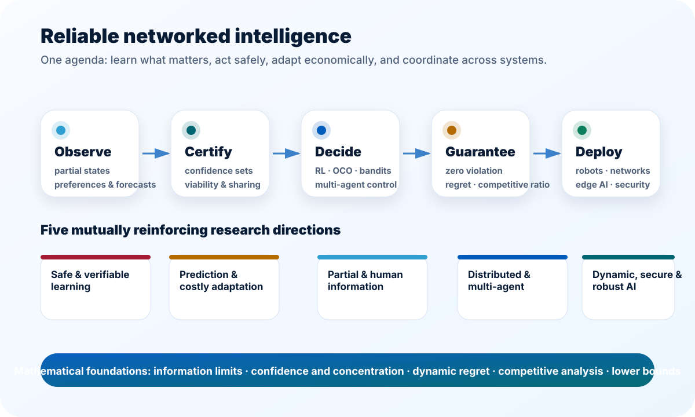
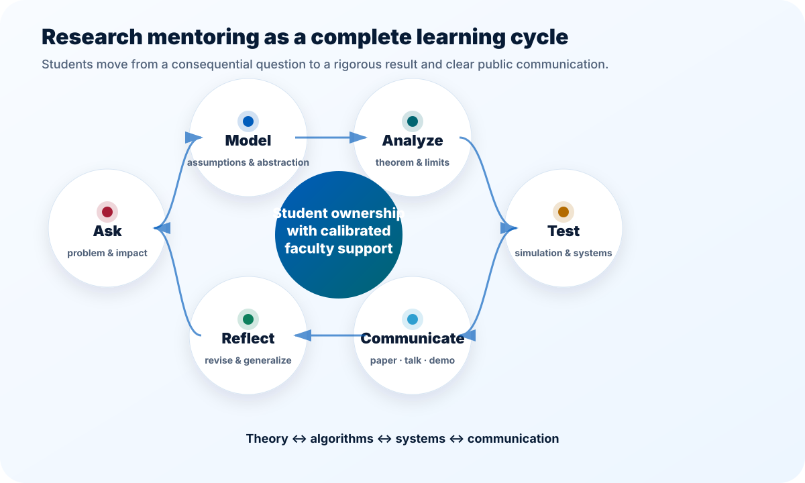

NeurIPS 2026
Zero-Violation Regret for Cooperative Markov Games with Coupled Instantaneous Hard Constraints.
View publication record →Theory and algorithms for systems that must learn safely, adapt economically, coordinate across components, and remain useful under partial information and change.
My group works across reinforcement learning, online optimization, bandits, multi-agent systems, edge AI, security, and autonomous systems. We seek guarantees that connect what can be learned to what can be executed in the real world.
Zero-Violation Regret for Cooperative Markov Games with Coupled Instantaneous Hard Constraints.
View publication record →Fresh Enough to Decide: Age of Intelligence for Cost-Aware Model Synchronization in Dynamic IoT Systems.
Read the paper →Jialei Liu led our work on bi-level provisioning and scheduling with switching costs and cross-level constraints.
Read the paper →Serving as a member of the University at Buffalo ECE Tenure and Promotion Committee.
View professional service →It requires deciding what information to acquire, which uncertainty to trust, when to update or switch, how to coordinate across agents, and how to preserve safety and service while learning.

How should an intelligent system learn, communicate, update, and act when information is incomplete, environments change, actions interact, and every adaptation has operational consequences?
Instantaneous hard constraints, viability, non-convex safety, and coupled multi-agent certification.
Explore direction → 02Online convex optimization, switching and ramp costs, lookahead, bi-level control, and best-of-both-worlds guarantees.
Explore direction → 03POMDPs, active probes, experience sharing, multi-objective learning, and imperfect preferences.
Explore direction → 04Graph-structured coordination, cloud–edge–device learning, communication, and shared constraints.
Explore direction → 05Nonstationarity, adversarial learning, Age of Intelligence, cyber defense, and model robustness.
Explore direction →Representative publications span safe learning, partial observability, costly adaptation, edge intelligence, and student-led systems research.
State information, forecasts, probes, preferences, communication, and their physical or statistical costs.
Instantaneous safety, ramp constraints, cross-component coupling, safe continuation, and resource feasibility.
Actions, policies, model versions, schedules, communication patterns, and cloud–edge–device placement.
Zero violation, regret, competitive ratio, information limits, robustness, and scalable dependence on system structure.
Students learn to move between real-world questions, mathematical abstractions, proofs, algorithms, experiments, and public communication.

I welcome conversations with prospective students, collaborators, educators, and partners interested in rigorous and deployable intelligent decision-making.